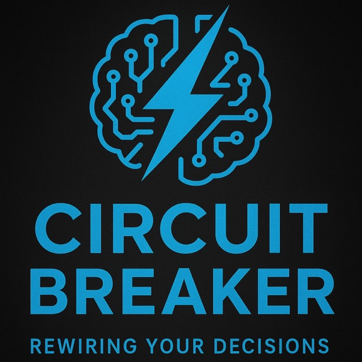

20 Dec 2025 · 5:45

20 Dec 2025 · 5:45
Have you ever judged a price, a decision, or an opportunity by the very first number or piece of information you encountered?
In this episode of Circuit Breaker: Rewiring Your Decisions, we explore Anchoring Bias — the tendency to rely too heavily on the first information we receive when making judgments. We look at how an initial number, impression, or reference point can influence the way we evaluate everything that comes after it.
But how much does that first piece of information shape what we believe is reasonable? Discover how Anchoring Bias can influence our choices, distort our judgments, and reveal why the first thing we hear can be difficult to move beyond.